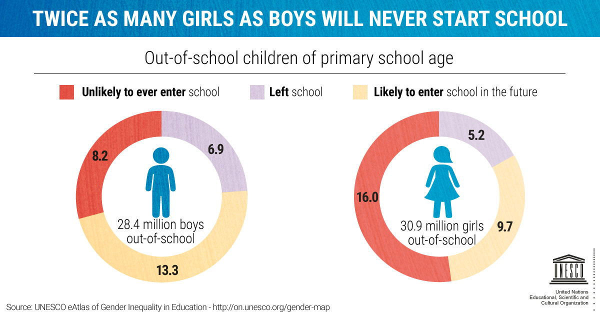

Gender inequalities in education remain despite data proving the importance of girls' education for development.
Around the world, 129 million girls are out of school, including 32 million in elementary school, 30 million in lower secondary school, and 67 million in upper secondary school. Girls in conflict-affected nations are more than twice as likely to drop out as girls in non-affected countries.
In elementary education, just 49% of nations have achieved gender parity. The gender divide worsens at the secondary level, with 42% of nations achieving gender parity in lower secondary education and 24% in upper secondary school.
There are several causes for this. Barriers to girls' education differ by country and community, including poverty, child marriage, and gender-based violence. When it comes to schooling, poor households frequently favor boys.
In certain locations, schools fail to satisfy the requirements of females in terms of safety, cleanliness, and sanitation. In others, teaching techniques are not gender-responsive, resulting in learning and skill development disparities between men and women.
Investing in girls’ education transforms communities, countries and the entire world. Girls who receive an education are less likely to marry young and more likely to lead healthy, productive lives. They earn higher incomes, participate in the decisions that most affect them, and build better futures for themselves and their families.
Girls’ education strengthens economies and reduces inequality. It contributes to more stable, resilient societies that give all individuals – including boys and men – the opportunity to fulfil their potential.
But education for girls is about more than access to school. It’s also about girls feeling safe in classrooms and supported in the subjects and careers they choose to pursue – including those in which they are often under-represented.